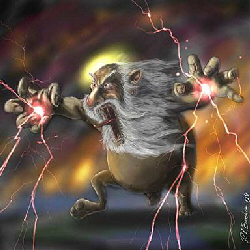

La teología
La subestimación a la que se somete el propio hombre prehistórico ante las fuerzas ineluctables e inexplicables de la naturaleza, contrasta radicalmente con la idea de un ser fabuloso y de incalculable poder al que se le confiere un bagaje de características antropomórficas que dan forma a un ser tan inimaginable como contradictorio. Es la forma más ancestral y primitiva de institucionalizar los propios miedos surgidos de la inherente ignorancia de las causas de todos aquellos fenómenos extraordinarios que han sido desmitificados por la constante labor de la curiosidad humana, a través de la ciencia y de la concesión de la total primacía de la razón sobre la sinrazón.
La escalada sin fin de atribuciones divinas —que no son más que las mismas humanas elevadas hasta aquellos puntos inimaginables que desearía su vanidad— empequeñece al hombre desposeyéndolo de una dignidad que le pertenece por derecho propio y que es pisoteada por los entes quiméricos que él mismo inventó, dando lugar a una sumisión a unos poderes necesitados de honores y loanzas, fruto de la soberbia y del orgullo que caracterizan las típicas relaciones de poder en la jerarquía humana.
Ciertamente no se pueden inventar nociones nuevas e inexistentes sin referentes existenciales: la patente invención de la que emana la idea de Dios sólo puede producir atributos humanos. La contradicción que surge de la propia semántica de lo divino es el resultado lógico de la falta de fundamentos a la hora de elaborar dicho concepto; y la falta de suspicacia en el pueblo primitivo allanó el camino hacia la confección de dicho ser que pronto fue objeto de retoques y modificaciones “al gusto” amoldándose a las necesidades culturales y psicológicas de cada civilización.

No fue tarea baladí, por parte de los primeros teólogos de la Iglesia, armonizar la cara más cruel y vengativa del dios veterotestamentario con la misericordiosa y bondadosa de la de su supuesto hijo que, contradiciendo y contrarrestando a su progenitor, posibilitó la creación de una ciencia dedicada exclusivamente a deshacer los entuertos que produjo la imaginación humana en el intento de domeñar a una plebe que sólo podía ser sometida a través de las exigencias y caprichos de los dioses, los cuales amenazaban con terribles castigos ante el incumplimiento de sus deseos
La Iglesia Católica ha inventado un ser tan inimaginable que ha tenido que crear un cuerpo teológico para intentar explicar lo inexplicable; y ante la imposibilidad de demostrar la cuadratura del círculo presenta unos conceptos vicarios que sustituyen la lógica humana. Así pues, la fe constituye el principal pedestal en el que se sustenta la creencia en lo increíble, siendo un espléndido artificio con el que se autoalimenta la virtud que consiste en creer sin ver. Mientras que perder la fe es considerado como una ofensa al propio Dios, al que únicamente se puede acceder por fe, el creyente queda atrapado en un círculo vicioso que reclama una petición de principio totalmente impropio de de una divinidad —que queriendo darse a conocer entre sus súbditos— juega al escondite, impidiendo que la razón pueda vislumbrar un dios que pretende ser racional, amenazándoles con un enfado descomunal si no consiguen ver con el mismo ojo las dos caras de una moneda a la vez.
La teología pretende ver, tapándose los ojos, lo que los demás no pueden divisar con los ojos abiertos, eludiendo a toda costa la aclaración de unos principios de los que dependen todas sus derivaciones que son objeto de indagaciones y elucubraciones ilógicas como consecuencia de dar por cierta la premisa principal que la propia Iglesia prohibió investigar.
Es desconcertante la actitud de teólogos —llamados liberales— que desmarcándose de las directrices inquisitoriales de sus autoridades religiosas, descubren ciertas irregularidades —como producto de la nueva investigación exegética— por lo que deberían sospechar de toda la teología y, no obstante, sólo la parchean proporcionando ante los feligreses una mayor sensación de autenticidad ante lo que únicamente puede ser verdad o mentira total. Los fundamentos racionales que caracterizan cualquier argumento lógico son desconocidos en una teología repleta de contradicciones entre sus postulados que surgieron desde la subjetividad interpretativa de algunos que se erigieron en hermeneutas infalibles gracias a la inerrancia de los textos que la propia Iglesia les atribuyó. Sólo la constante pertinacia en mantener fuera del error lo que es falso por sí mismo, escamoteando la más mínima lógica, puede sostener una teología que ha sido rebatida sin dificultad por el arte que permite discernir lo verdadero de lo falso, llamado comúnmente filosofía, la cual hace inútil cualquier pretensión de racionalidad de unas creencias que, de ser racionales, no necesitarían de la fe.
No hay disciplina más inútil que la teología. La ingente cantidad de elucubraciones que la protagonizan intentan averiguar la mente de un dios que ella misma dice que es inalcanzable; dirigen a los fieles a través de los caminos y designios de ese dios que ella afirma ser inescrutables pero, paradójicamente la Iglesia se convierte en experta de lo desconocido sabiendo más que nadie lo que es Dios y lo que no es; lo que quiere de nosotros y lo que no quiere y cuándo los acontecimientos de nuestra vida son fruto de su voluntad o no lo son.
Mientras el pueblo permanecía indocto, la Iglesia no tuvo dificultades a la hora de adoctrinarlo por medio de lo que G. Puente Ojea llama meandros teológicos que contentan a los pocos exigentes. Pero con la llegada de la era de la ciencia y el predominio de la razón —único camino para la obtención del conocimiento— los malabarismos argumentales de los teólogos no sólo no resisten los embates de la lógica, sino que deben enfrentarse a la cruda realidad de los resultados propiciados por la nueva exégesis imparcial de investigadores e historiadores comprometidos con la verdad.
Mientras que la Iglesia dispone de teólogos y los reúne junto con toda su jerarquía en concilios para dirimir grandes dudas; mientras que esas dudas han estado presentes a lo largo de toda su historia dando lugar a herejías y sectarismos provocando persecuciones y tormentos a los que disentían de la oficialidad ortodoxa, ¿no es extraño que Dios no dejara bien claro lo que realmente quería de sus hijos, en lugar de dejar en manos de unos escritores, llamados evangelistas, que ni se pusieron de acuerdo en lo esencial, ni supieron concretar la voluntad divina en un montón de escritos ambiguos, confusos, contradictorios, lejos de la claridad, de la concisión y precisión propios de un dios que pretende darnos unas directrices?
La existencia de un dios como el que postula la Iglesia Católica ataca directamente la dignidad del ser humano que es convertido, en contra de su voluntad, en un esclavo sufriente de una autoridad, que por ser quien es, no debería necesitar —al ser perfecto— ningún tipo de vasallaje. Los hombres que se someten voluntariamente a una autoridad divina ignoran que la dignidad humana está por encima de cualquier dios, cuya existencia —si fuera el caso— no le permite, bajo ningún concepto, tener derecho sobre lo que él ha creado al constituir —tal pretensión— el mayor abuso de poder imaginable. Sólo la condición de ignorante, inherente en el hombre primitivo, podría justificar la creación de una idea tan maquiavélica como injusta; y al hombre moderno le corresponde barrer de la mente a un ser que tantos sufrimientos y desgracias le ha supuesto, en contra de ningún beneficio.
La necesaria existencia de Dios, en contra de su contingencia, debería dar como resultado un ser razonable al que se pudiera acceder por la razón humana; mas no hay mayor contradicción, a la luz de una mente lógica, que la idea de un ser perfecto con necesidades, de un dios omnisciente que necesita de la oración para saber lo que queremos; de un dios bondadoso que permite el mal; de un dios todopoderoso que para solucionar sus propias imperfecciones tiene que enviar a su hijo para subsanarlas…de un dios tan irracional, que sólo la irracionalidad de la fe puede hacer posible su existencia.
Comentarios
Comments powered by Disqus